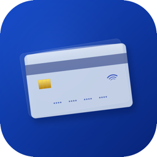

CardProPolítica de privacidad
Última actualización: 26 de septiembre de 2026
Responsable
CardPro es desarrollada por Andres Miguel Rodriguez Perez, República Dominicana. Contacto: soporte.cardpro@gmail.com.
Qué información maneja la app
La información que tú ingresas o importas: alias y últimos 4 dígitos de tus tarjetas, banco, fechas de corte y de pago, saldos, pagos mínimos, préstamos y el historial de pagos que marcas. CardPro nunca pide el número completo de tu tarjeta, tu CVV ni las credenciales de tu banco, y no se conecta a tu banco.
Dónde se guarda
Únicamente en tu iPhone, dentro del almacenamiento de la app (compartido con sus widgets y su extensión para compartir). Si tienes activado el respaldo de iCloud de tu dispositivo, iOS puede incluir estos datos en tu respaldo personal, cifrado y administrado por Apple; CardPro no tiene acceso a él.
Estados de cuenta
Cuando importas un estado de cuenta (PDF, foto o escaneo), el texto se lee en tu dispositivo con las tecnologías de Apple (Vision y, en equipos compatibles, Apple Intelligence en el dispositivo). El documento no se sube a ningún servidor. Si el PDF tiene contraseña y eliges guardarla, se almacena en el Llavero (Keychain) de tu iPhone.
Permisos
- Cámara: solo para escanear estados de cuenta cuando tú lo pides.
- Notificaciones: recordatorios de pago programados localmente en tu iPhone.
- Face ID / Touch ID: opcional, para bloquear la app. CardPro nunca recibe tus datos biométricos; iOS solo le indica si la verificación fue exitosa.
Exportar y borrar tus datos
Puedes exportar tus datos en JSON o CSV desde Ajustes; el archivo va a donde tú decidas. Puedes eliminar tarjetas y préstamos en cualquier momento, y al borrar la app se eliminan todos sus datos del dispositivo.
Terceros
CardPro no incluye SDKs de terceros, publicidad ni herramientas de analítica. Si activas en tu iPhone la opción de compartir datos de análisis con desarrolladores, Apple puede enviarnos reportes de fallos anónimos.
Menores de edad
CardPro no está dirigida a menores de 13 años.
No es asesoría financiera
CardPro es una herramienta de organización. Verifica siempre montos y fechas con tu banco.
Cambios
Si esta política cambia, actualizaremos esta página y la fecha de arriba.